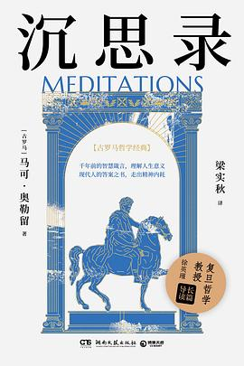

《沉思录》是罗马皇帝马可·奥勒留写给自己的思想笔记，围绕自律、命运、责任、情绪控制与理性生活展开。 它不是高高在上的说教，而是一种不断提醒自己“如何更好生活”的内在训练。
这本书不适合一口气读完，更适合反复翻看。它给我的最大帮助是，在遇到焦虑、比较或压力时， 提醒我回到行动本身，回到能够真正改变的部分。
“外界并不总由我决定，但我可以决定自己如何回应。”
作为斯多葛哲学的代表性作品，《沉思录》几乎跨越时代地影响着后来的读者。 它之所以经典，不是因为它提供了万能答案，而是因为它不断训练人建立稳定、清醒、克制的内心。